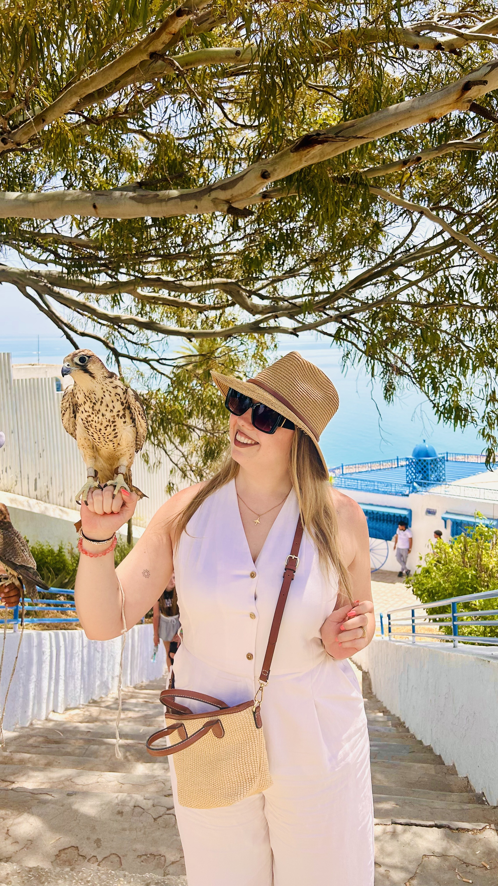

Mi historia
Diseñando experiencias con alma y propósito
Soy Sandra, viajera incansable y creadora de experiencias a medida.
Tras más de 11 años trabajando en el sector turístico, ayudo a personas a descubrir el mundo de una forma auténtica, sencilla y sin estrés, diseñando viajes personalizados que se adaptan a su ritmo, sus gustos y su manera de vivir cada aventura.
Mi forma de trabajar nace de escuchar, entender tu ritmo y convertir tus ideas en una ruta clara, cuidada y fácil de disfrutar desde el primer instante.
Porque cada viaje debe sentirse único desde el primer instante.
Planear mi viaje